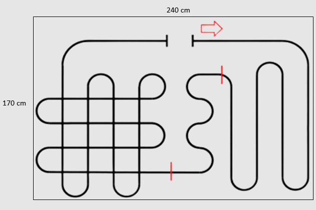
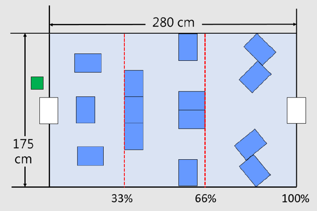

This project serves as the term project for the course "Principles and Applications of Microcontrollers". The primary objective is to apply and reinforce the knowledge and skills acquired in implementing AVR microcontrollers during the course. The project encompasses two main stages: the line-tracker and the maze-solver. Both stages are using the same robot car with different sensors equipped on it.
Introduction
> Robot Car
The design of the robot car used in the whole competition are the same for each team. However, each team possess the flexibility to choose what sensors they are using. The main microcontroller we are using during the competition is ATmega328p inserted on the breadboard. Arduino is working as the ISP (In-System Programming) helping us to flash our embeded-C code into ATmega328p in a convinient way. Multiple sensors are also equipped on the car. A DMS sensor is attached on the upper front layer providing the distance information for the robot to navigate in the maze. Three IR sensors are attached on the bottom layer facing the ground. These IR sensors are used for tracking the black line during line tracking. An additional ultrasonic sensor is also available to add on the robot car for every team. We, however, decided not to add it since using a DMS sensor is sufficient to finish the task. The following figure 2. is the simplified wiring diagram of the robot car.
Figure 1. Robot car
Figure 2. Simplified wiring diagram
> Line Tracker
Figure 3. shows the competition venue of the line tracker.
Figure 3. Line tracker competition venue
Commencing from the designated start line, the robot autonomously navigates through the entire route. Running out of the route or taking shortcuts are prohibitted in the task. Any such violation will cause the robot car to return to the start and start again. The timer will not be reset during the competition. All teams are allotted a maximum of 2 minutes for each attempt. Teams are scored based on the time taken to complete the rout. Spending less time results in a higher score.
> Maze Solver
Figure 4. shows the competition venue of the maze solver.
Figure 4. Maze solver competition venue
The venue of the maze is surrounded by walls higher than the height of the robot. The robot car would enter a small door and starts to navigate to the exit of the maze autonomously. If the robot is stucked in the maze, reseting the robot and start from the start line is acceptable. The timer, however, will not be reset during the competition. Same as the line tracker competition, all teams are allotted a maximum of 2 minutes for each attempt.
Approaches
> Line Tracker
We uses three IR sensors for monitoring the route of the robot car. When the middle IR sensor registers the highest value, the robot moves forward at full speed. If the right IR sensor detects a higher value, the robot adjusts its trajectory by slowing the right wheel and speeding up the left wheel. Conversely, when the left IR sensor detects a higher value, the robot adjusts by slowing the left wheel and accelerating the right wheel. This method ensuresthe robot to correctly navigate along the black line. PID control was also implemented in the task. However, we discovered that, in this competition, using PD control is sufficient and better than using PID control.
> Maze Solver
According to the maze shape, one of the solution is to equipped both DMS sensor and ultrasonic sensor on the front and right of the robot. The robot could then navigate along the right wall util it reaches the exit. Nonetheless, after testing, we discovered that the voltage of the alkaline battery could drop as the battery usage time increases causing the sensing value of DMS sensor and the pwm of the motor to change. This problem could then cause the algorithm failed. In order to deal with this problem, an alternative algorithm is designed. After entering the maze, the machine continuously moves in a fan-shaped pattern towards a particular direction. When it encounters a wall or obstacle, it reverses for a short distance and then continues moving in a fan-shaped pattern with different radius. This process repeats until the entire vehicle successfully navigates its way out of the maze. By using this method, the robot could successfully exit the maze on its own.
Results
The final score of the whole competition is average by the two stages. With many efforts, we eventually obtain 4th place among the 25 teams which is an acceptable result.